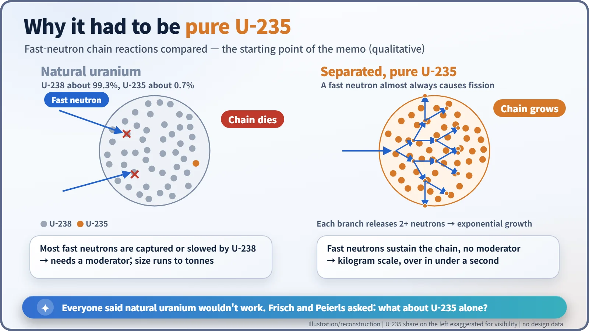
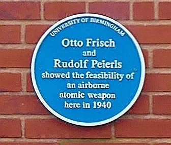
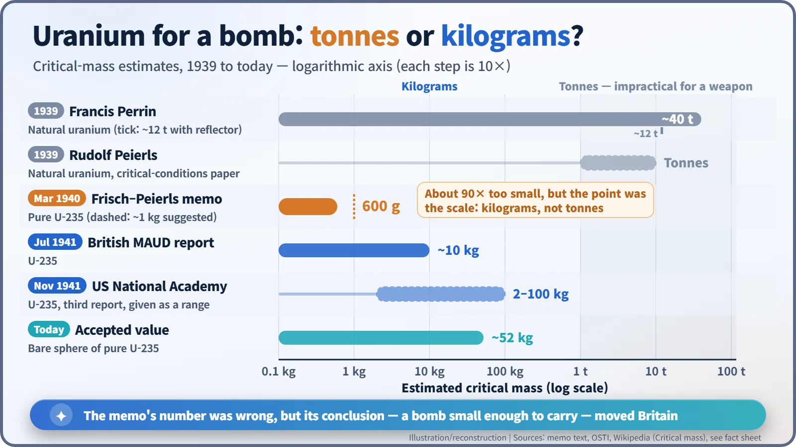

Nuclear History · 079
Not Tonnes but a Kilogram? — The Frisch–Peierls Memorandum (1940)
Shut out of radar work, Otto Frisch and Rudolf Peierls asked what pure uranium-235 would do, and their answer turned tonnes into kilograms.
In March 1940 two refugee physicists in Birmingham, Otto Frisch and Rudolf Peierls, asked what would happen in a lump of pure uranium-235 and found that the critical mass might be about a kilogram, not tonnes. Their short, secret memorandum also warned of radioactive fallout and civilian deaths, and it set Britain on the road to an atomic bomb project.
One typewriter, one carbon copy
In March 1940, in a laboratory at the University of Birmingham, the physicist Rudolf Peierls (1907–1995) typed out a document himself. It was not something he could hand to a secretary. He made a single carbon copy. Written with his colleague Otto Robert Frisch (1904–1979), those few pages became known as the Frisch–Peierls memorandum, and they are regarded as the first technical description of a nuclear weapon that could actually be built. [6]
Locked out of the radar lab
Both men were refugees from Nazi Germany and Austria. Peierls, born in Berlin, held the chair of applied mathematics at Birmingham. Frisch had come over from Copenhagen for what was meant to be a short visit in the summer of 1939; when war broke out in September he could not go back, so he stayed. Their head of department, Mark Oliphant, had his team working flat out on radar, the most closely guarded secret of the day. As "enemy aliens", Frisch and Peierls were not allowed through that door. So they turned to uranium instead.
The conventional wisdom ran like this. According to Niels Bohr's interpretation of fission, the isotope that splits easily is uranium-235, and it makes up only about 0.7% of natural uranium. The other 99.3%, uranium-238, tends to swallow fast neutrons or slow them down. So a chain reaction would need a moderator to slow the neutrons, and the whole assembly would have to be enormous. In 1939 the French physicist Francis Perrin estimated the critical mass of natural uranium at about 40 tonnes. Peierls himself had published a paper that year on the conditions for a chain reaction, found that the answer for natural uranium was "of the order of tons", and concluded it had nothing to do with weapons. [6]
"What if we only had U-235?"
The turn came from a single question. Forget natural uranium: what about a lump made of nothing but separated U-235? With no U-238 to intercept them, fast neutrons could go straight on to split the next nucleus. No moderator would be needed, and the chain would race through the metal almost instantly.

This is where critical mass comes in. The number of neutrons produced in a lump grows with its volume; the number leaking out through the surface grows with its area. As the lump gets bigger, volume outpaces surface, and beyond a certain size more neutrons are made than lost. That threshold is the critical mass. Frisch plugged the figures for U-235 into Peierls's formula, and the answer startled them both. The memo gives a critical radius of 2.1 cm for the metal, "corresponding to a mass of 600 grams", and suggests "about 1 kilograms as suitable size for a bomb". Not tonnes, then, but something you could hold in your hand. [2]
What those few pages said
The memo has two parts: a technical note with the physics, and a non-technical memorandum spelling out what it meant. The non-technical part says the energy released would be "about the same as that produced by the explosion of 1,000 tons of dynamite"; the technical part estimates that a 5-kilogram bomb would match "several thousand tons of dynamite". For separating U-235 they proposed thermal diffusion, and reckoned that around 100,000 separation tubes would be needed. [1] [2]
What is striking is the weight of the warnings. The authors wrote that radioactive material from the blast would drift with the wind and kill people in a strip several miles long, and that rain would make it worse. The weapon, they wrote, "could probably not be used without killing large numbers of civilians, and this may make it unsuitable as a weapon for use by this country." Yet they also argued that "it is quite conceivable that Germany is, in fact, developing this weapon", and that "the most effective reply would be a counter-threat with a similar bomb." Starting once Germany had one would be too late, so work should begin at once, even if Britain never intended to use the bomb in an attack. [1] [3]

A wrong number pointing the right way
To be candid, the memo's number was well off. It assumed a uranium density of 15 grams per cubic centimetre (the real figure is about 19), and, more importantly, a fission cross-section (in effect, the chance that a neutron hitting a nucleus causes fission) roughly ten times too large. Frisch admitted as much in 1967: "I put in a vastly optimistic figure for the fission cross section and came out with a critical mass of one pound." The accepted value today for a bare sphere of pure U-235 is about 52 kg, so the memo was too small by a factor of nearly 90. [6]

Still, what made the memo matter was scale, not precision. Several tonnes cannot go in an aircraft; a few kilograms can. Oliphant passed the memo to the government's science adviser Henry Tizard, and in April 1940 Britain set up a committee to examine uranium, the group that became the MAUD Committee. Later estimates crept closer to reality: about 10 kg in the British MAUD report of 1941, and a range of 2 to 100 kg from the US National Academy of Sciences that November. Peierls later put it plainly: "The only unusual thing that Frisch and I did at this point was ask those questions." [4] [6]
There was no giant apparatus behind the memo. Two men questioned an assumption everyone took for granted, followed the calculation to the end on paper, and wrote down the horrors the result could bring. Those few pages became a starting point that accelerated the British and American atomic bomb projects.